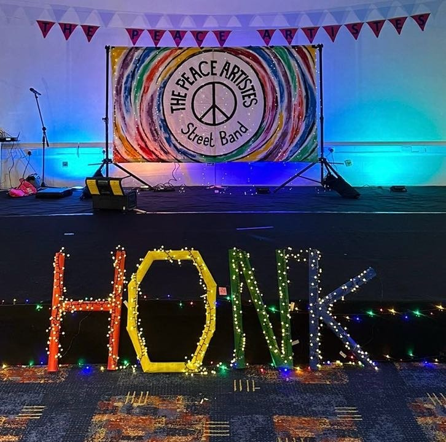

Brass, saxes, drums and colour for festivals, weddings, processions & parties.

Each page keeps its own soft colour only on the top header band. The menu stays exactly as it is now (white bar, deep-red for the current page, yellow on hover) - no colour tint on the nav buttons. Below every header you'll see a strip of normal page content on the usual cream-paper background, so you can see exactly where the colour stops.
HONK! stays exactly as it is now - its original dark festival hero with the fairy-lights photo, completely untouched. Contact uses the brand yellow, and Home uses cream.
One thing to flag: the Home cream #FBEFD0 is very close to the page's own paper background #FFF8E7, so the Home header will look almost like it has no colour - soft and subtle. If you'd like Home to stand out a touch more, just say and I'll nudge it warmer.
Forty years of brass, saxes, drums and colour - at festivals, parades, bonfires and lantern processions across Yorkshire.
Best way to find out what we sound like is to hit play. Here are some of our favourite recent clips.
Where we'll be - and where we've been. Free outdoor events are open to all; ticketed events are linked.
How a peace protest band from Bradford ended up playing weddings, funerals, festivals - and getting told off by Archbishop Tutu.
A few kind words from the people and organisations we've played for.

As part of Bradford City of Culture 2025, HONK! Bradford transforms the Bradford District into a vibrant hub of live acoustic music - street performances by bands from across the world, stunning costumes and audience participation.
Festivals, weddings, processions, parties, picket lines, conferences. Tell us about your thing and we'll see if we're free.